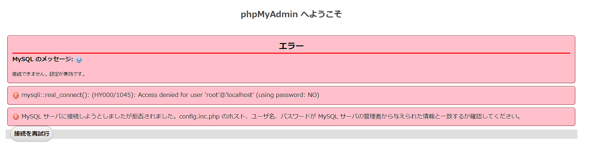

SELECT LAST_INSERT_ID()| フィールド | 型 |
|---|---|
| id | int(主キー auto) |
| big_name | varchar(64) |
| lat | double |
| lng | double |
INSERT INTO bigs () VALUES ();
INSERT INTO bigs (id) SELECT 0 FROM bigs;
INSERT INTO bigs (id) SELECT 0 FROM bigs;
INSERT INTO bigs (id) SELECT 0 FROM bigs;
INSERT INTO bigs (id) SELECT 0 FROM bigs;
INSERT INTO bigs (id) SELECT 0 FROM bigs;
INSERT INTO bigs (id) SELECT 0 FROM bigs;
INSERT INTO bigs (id) SELECT 0 FROM bigs;
INSERT INTO bigs (id) SELECT 0 FROM bigs;
INSERT INTO bigs (id) SELECT 0 FROM bigs;
INSERT INTO bigs (id) SELECT 0 FROM bigs;
INSERT INTO bigs (id) SELECT 0 FROM bigs;
INSERT INTO bigs (id) SELECT 0 FROM bigs;
INSERT INTO bigs (id) SELECT 0 FROM bigs;
INSERT INTO bigs (id) SELECT 0 FROM bigs;
INSERT INTO bigs (id) SELECT 0 FROM bigs;
INSERT INTO bigs (id) SELECT 0 FROM bigs;
INSERT INTO bigs (id) SELECT 0 FROM bigs;
INSERT INTO bigs (id) SELECT 0 FROM bigs;
INSERT INTO bigs (id) SELECT 0 FROM bigs;
INSERT INTO bigs (id) SELECT 0 FROM bigs;
UPDATE bigs SET
big_name = CONCAT('ビッグマン', id),
lat =RAND() * 180 - 90,
lng =RAND() * 360 - 180
| フィールド | 型 |
|---|---|
| id | int(主キー) |
| big_name | varchar(64) |
| lat | double(8,6) |
| lng | double(9,6) |
ALTER TABLE bigs ADD INDEX lat_index(lat);
ALTER TABLE bigs ADD INDEX lng_index(lng);
検証結果について
100万件データで下記の検索SQLを実行したときの計測時間を測定。SELECT big_name, lat, lng from bigs where lat > 26 AND lat < 27 AND lng > 127 AND lng < 128計測時間
対策
my.iniを開き、sql_modeを書き換える。#sql_mode=NO_ZERO_IN_DATE,NO_ZERO_DATE,NO_ENGINE_SUBSTITUTION sql_mode=ONLY_FULL_GROUP_BY,STRICT_TRANS_TABLES,ERROR_FOR_DIVISION_BY_ZERO,NO_AUTO_CREATE_USER,NO_ENGINE_SUBSTITUTION
SELECT REPLACE(main_image, "neko", "猫") FROM animals
エラー MySQL のメッセージ: ドキュメント 接続できません。設定が無効です。 mysqli::real_connect(): (HY000/1045): Access denied for user 'root'@'localhost' (using password: NO) MySQL サーバに接続しようとしましたが拒否されました。config.inc.php のホスト、ユーザ名、パスワードが MySQL サーバの管理者から与えられた情報と一致するか確認してください。
修正手順
バックアップ
docker exec -it コンテナ名 bash -c 'MYSQL_PWD=パスワード mysqldump -u ユーザー名 DB名' 1> バックアップファイル名
$ docker exec -it docker_demo_mysql_1 bash -c 'MYSQL_PWD=root mysqldump -u root animal' 1> sql.dump
リストア
$ docker cp animal.sql docker_demo_mysql_1:/tmp/animal.sql $ docker exec -it docker_demo_mysql_1 bash # mysql -u root -p animal < /tmp/animal.sql
INSERT INTO animals (name) SELECT name FROM animals
UPDATE animals SET value1 = FLOOR(1 + RAND() * 4)
UPDATE animals SET name = CONCAT('ネコ' , id)
UPDATE animals SET animal_date = ADDDATE('2022-10-01', 31*rand());
UPDATE animals SET animal_type = CASE FLOOR(RAND()*4) WHEN 0 THEN "哺乳類" WHEN 1 THEN "両生類" WHEN 2 THEN "魚類" WHEN 3 THEN "爬虫類" END
UPDATE items SET item_name = CONCAT('お酒-' , SUBSTRING(MD5(RAND()),1,8))